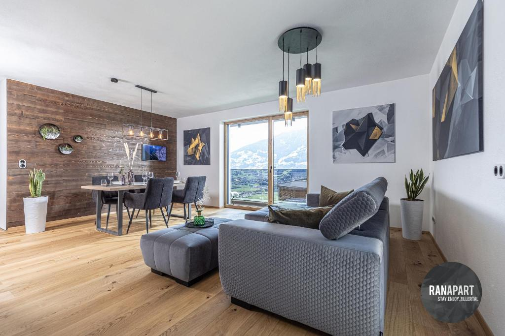
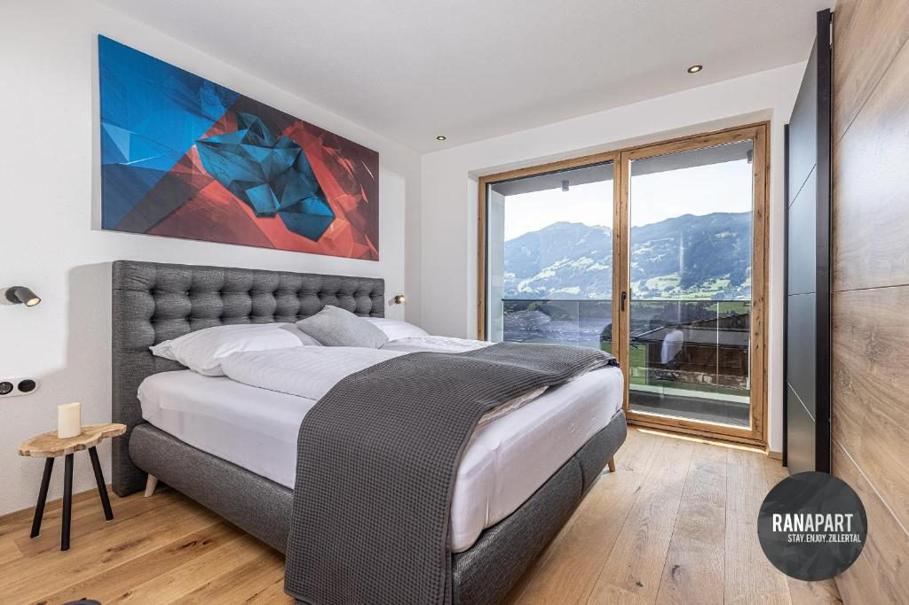
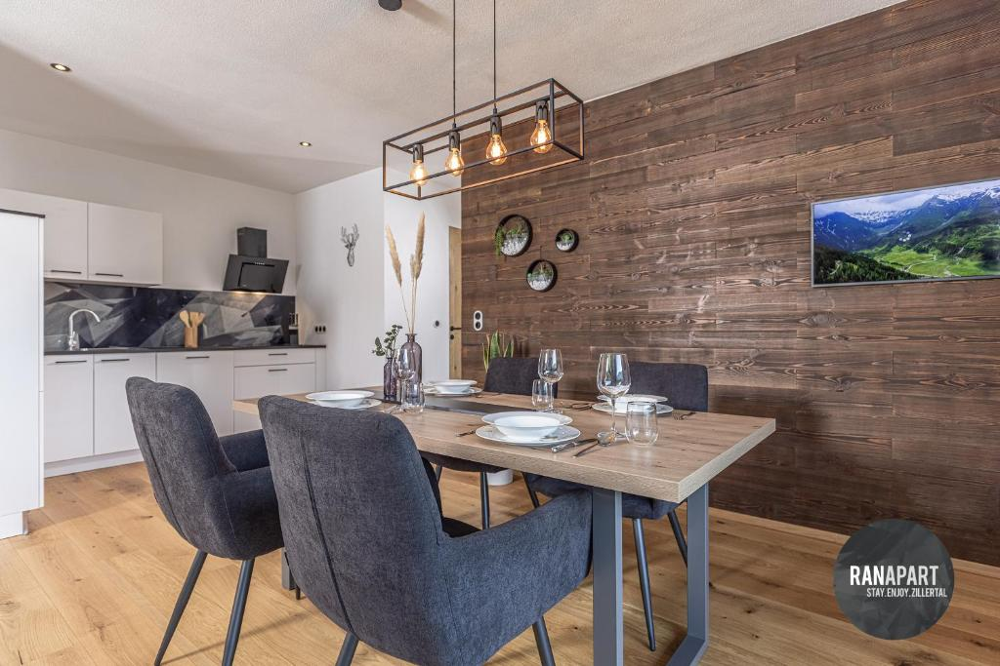
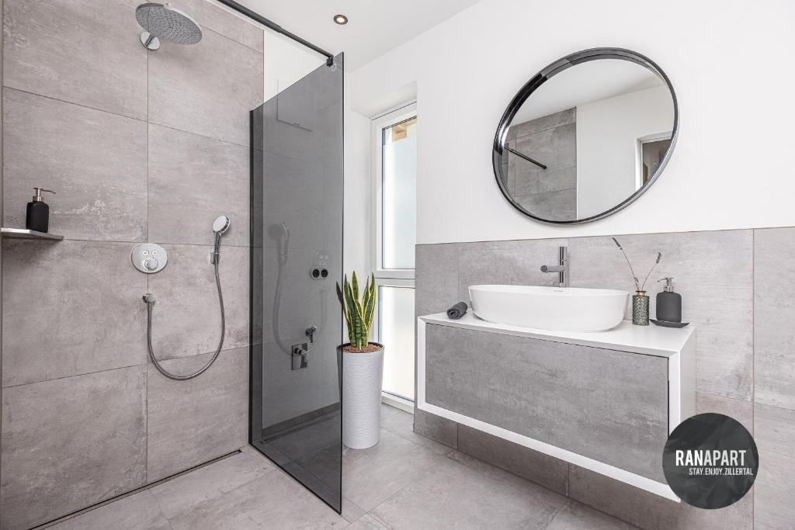
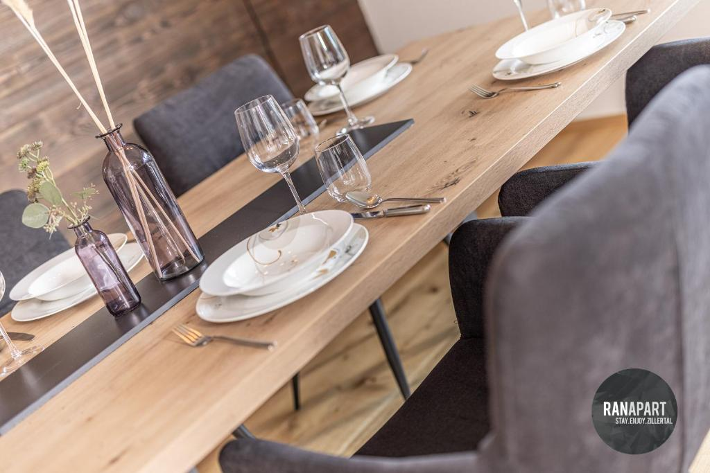
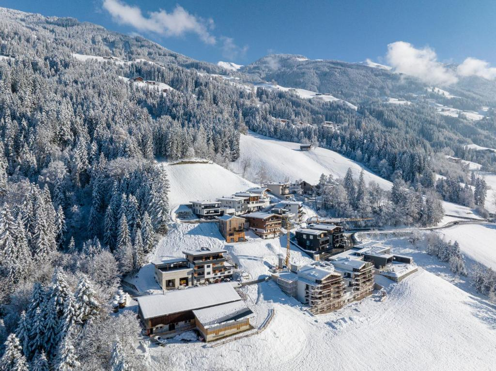

Buchung, Preise und Vertrag laufen über Booking.com.
Größe50 m², Schlafzimmer und Wohnraum mit Essplatz, ideal für zwei
Balkonmit Blick über den Talboden auf die Gipfel gegenüber
Küchevoll ausgestattet, mit Geschirrspüler, Kaffee- und Teezubehör
Badmit Dusche · Sat-TV · kostenloses WLAN
Wintereigener Skiraum, Spieljochbahn in rund zehn Autominuten
Autokostenloser Privatparkplatz
Die Wohnung

Wohnraum mit Sofa und Essplatz

Schlafzimmer mit Doppelbett

Essplatz und Küche

Bad mit Dusche

Aufgedeckt für den ersten Abend

Hart im Winter
Die Lage
Hart ist ein ruhiges Dorf im vorderen Zillertal, ohne Trubel. Zur Spieljochbahn in Fügen sind es rund zehn Autominuten: im Winter ins Skigebiet, im Sommer auf den Berg.
Freie Termine ansehen
Kalender, Preise und Buchung findest du auf Booking.com.